Sistemas binários (5.2)
Capa
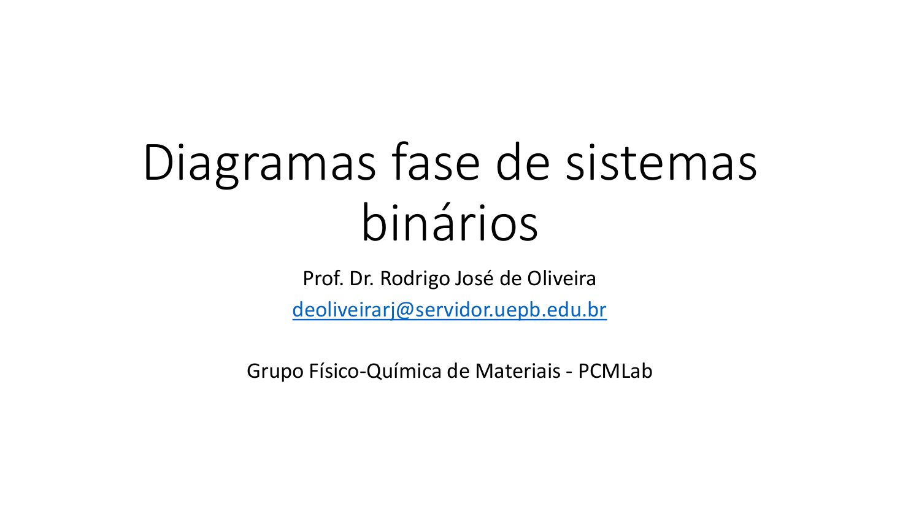
Diagramas de pressão de vapor
É mais complexo pois tem a adição de mais um fator, a composição.
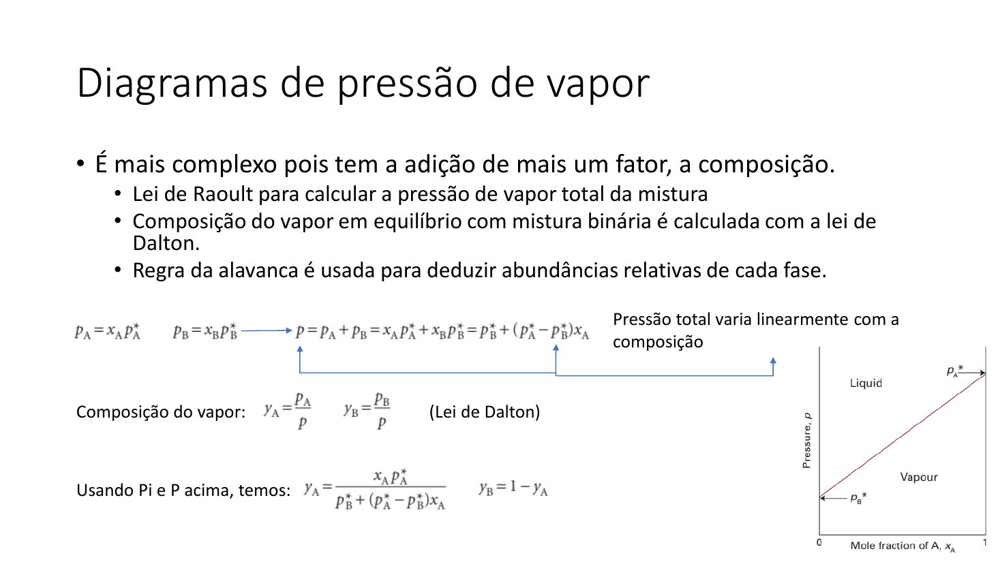
Note que aumentando a
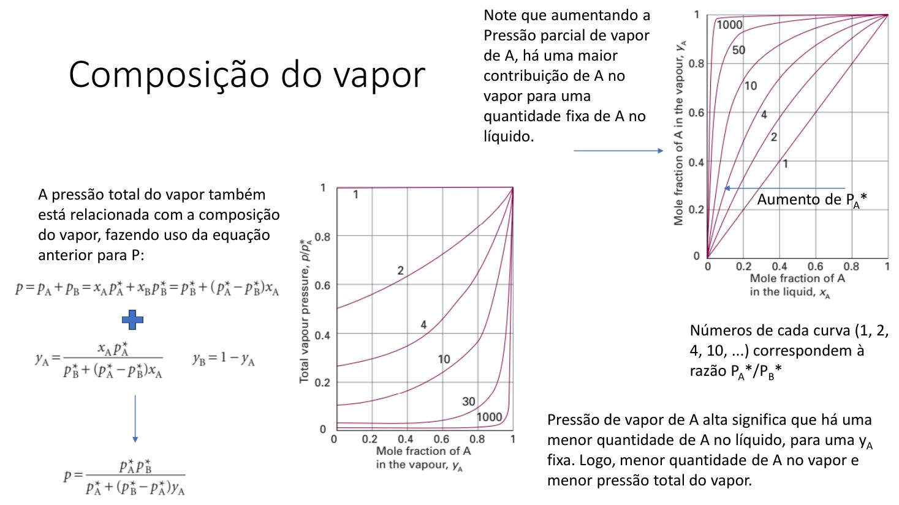
Interpretação dos diagramas
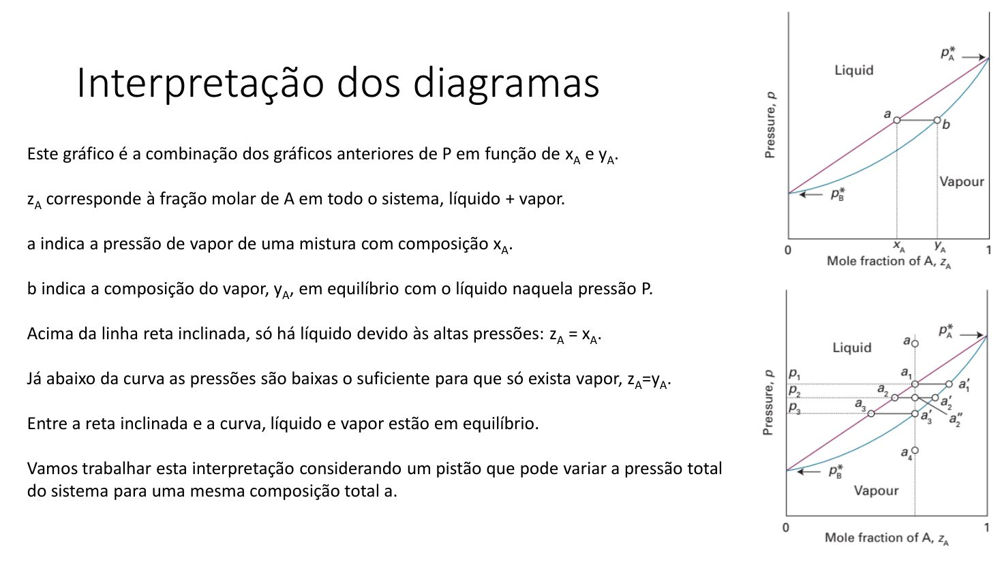
Interpretação dos diagramas
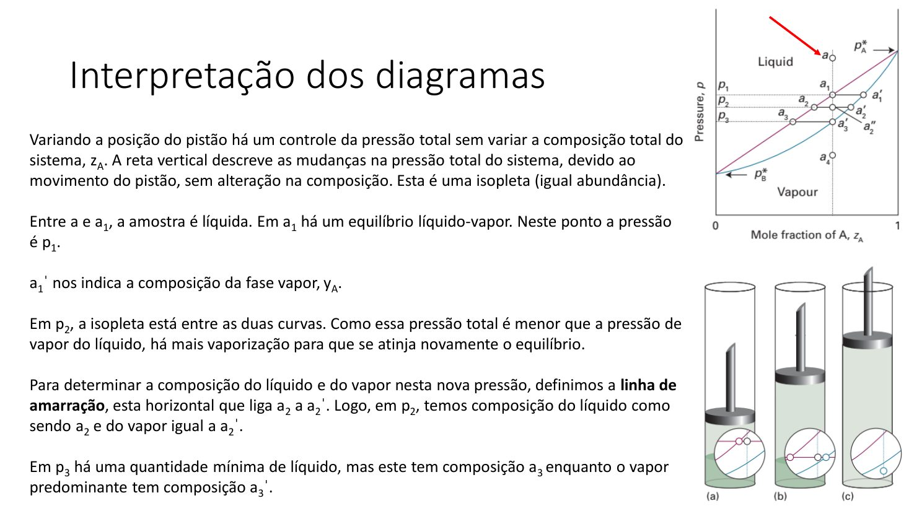
Regra da alavanca
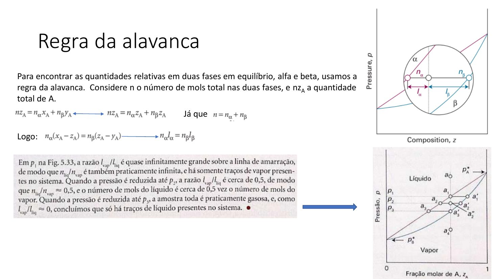
O conceito de Atividade
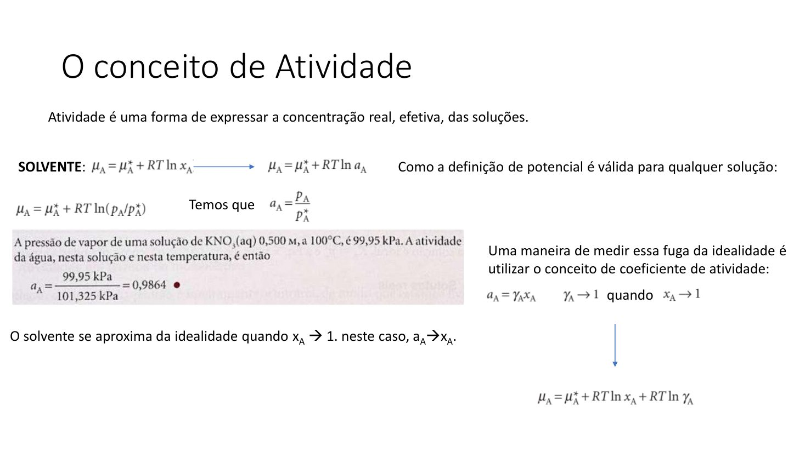
Atividade do soluto
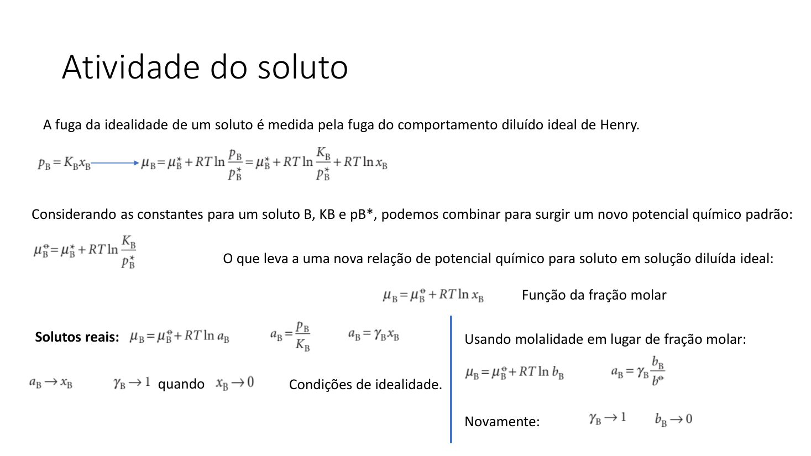
Página 9
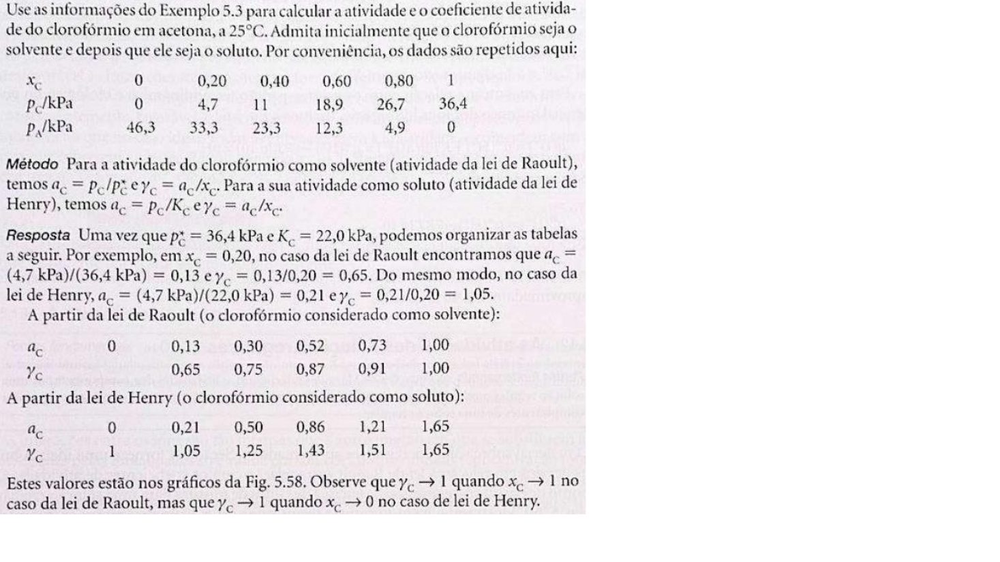
Atividade de soluções regulares
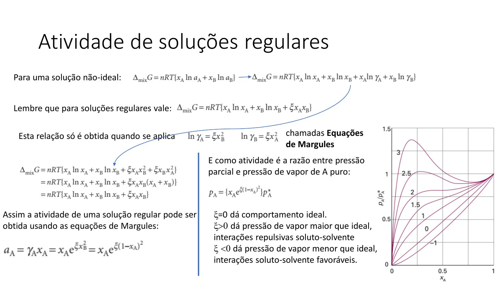
PRATIQUE
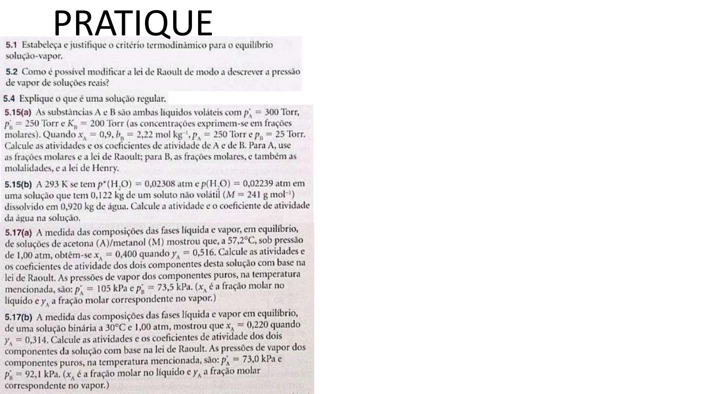
Página 12
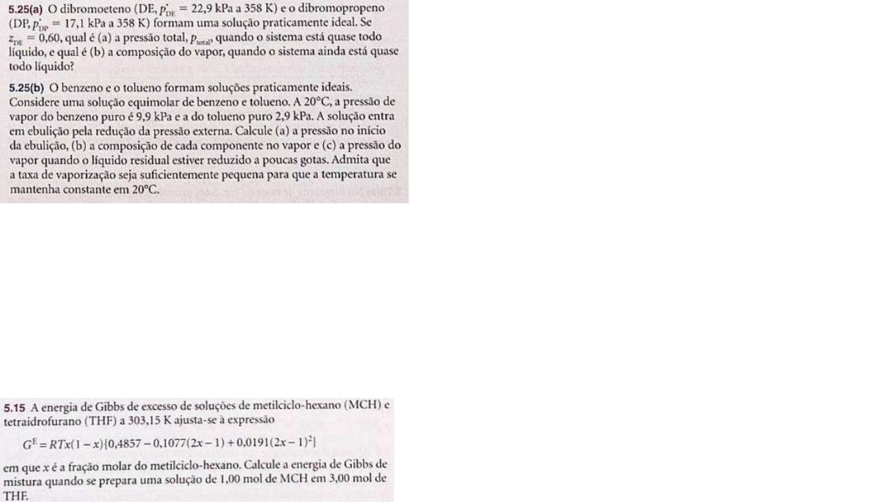
Do diagrama p–x ao diagrama T–x
Curvas de bolha e de orvalho, linha de amarração e regra da alavanca na temperatura
Duas vistas do mesmo equilíbrio
As páginas anteriores leram o equilíbrio a temperatura fixa: pressão de vapor contra composição (diagrama p–x). Para destilar, o eixo útil é outro — fixa-se a pressão (1 atm) e mede-se a temperatura de ebulição em função da composição: é o diagrama T–x. São duas vistas do mesmo equilíbrio, e elas se correspondem: um máximo no p–x aparece como mínimo no T–x, e vice-versa (Levine, §12.6, p. 368).
Curva de bolha, curva de orvalho, linha de amarração
- Curva de bolha (a inferior): temperatura em que aparece a primeira bolha de vapor — é a composição do líquido.
- Curva de orvalho (a superior): temperatura em que aparece a primeira gota de líquido — é a composição do vapor.
- Entre as duas curvas há duas fases em equilíbrio. A linha horizontal que une as duas composições em equilíbrio é a linha de amarração (tie line); ela também dá a temperatura de ebulição da mistura, lida no eixo vertical (Atkins, §5.6, p. 179, Fig. 5.36).
- Abaixo da curva de bolha há só líquido; acima da curva de orvalho há só vapor.
Regra da alavanca no T–x
As proporções das duas fases saem da regra da alavanca: nαlα = nβlβ, em que lα e lβ são as distâncias, sobre a linha de amarração, da composição global até cada extremo (Atkins, eq. 5.46, p. 178; Levine, eq. 12.40, p. 366). Em frações molares das fases:
com x = composição do líquido, y = composição do vapor na mesma linha de amarração e z = composição global da mistura.
Linha de amarração unindo líquido x = 0,20 a vapor y = 0,60; composição global z = 0,30.
fliq = (0,60 − 0,30)/(0,60 − 0,20) = 0,30/0,40 = 0,75
fvap = (0,30 − 0,20)/(0,60 − 0,20) = 0,10/0,40 = 0,25
Conferências: as duas frações somam 1; e z = 0,30 está mais perto de x = 0,20 do que de y = 0,60, então a maior parte da matéria está no líquido — a alavanca pende para o lado do líquido.
O que a destilação faz com esse diagrama
Quando a mistura ferve, o vapor é sempre mais rico no componente mais volátil — o de menor temperatura de ebulição (Atkins, p. 179; Levine, p. 369). Condensando esse vapor e fervendo-o de novo (destilação fracionada), o condensado fica a cada ciclo mais rico nesse componente; o número de ciclos necessários é o número de pratos teóricos da coluna (Atkins, p. 180).
Essa escada tem um fim: no ponto em que as curvas de bolha e de orvalho se tocam, o vapor passa a ter a mesma composição do líquido e a destilação deixa de enriquecer. É o azeótropo — próxima página.
Azeótropos
Ebulição mínima e máxima, e o caso etanol–água
No ponto em que as curvas de bolha e de orvalho se tocam, y = x: o vapor tem a mesma composição do líquido. Ferver, então, não muda mais nada — a mistura passa a se comportar como uma substância pura, com ponto de ebulição constante. Essa composição é o azeótropo (Levine, §12.6, p. 369; Atkins, §5.6(b), p. 180).
Não é um composto
A composição azeotrópica depende da pressão: o que é azeótropo a 1 atm ferve numa faixa de temperatura a outra pressão. É assim que se distingue um azeótropo de um composto definido (Levine, p. 369).
Os dois tipos, e o que os causa
| Tipo | Desvio de Raoult | p–x | T–x | Exemplos |
|---|---|---|---|---|
| Ebulição mínima | positivo: A–B menos favoráveis que A–A e B–B ⇒ pressão de vapor maior que a ideal; GE > 0 | máximo | mínimo | etanol–água; dioxano–água |
| Ebulição máxima | negativo: A–B mais favoráveis ⇒ pressão de vapor menor que a ideal; GE < 0 | mínimo | máximo | triclorometano–propanona; ácido nítrico–água |
Um teste rápido de coerência com o que já foi visto: no azeótropo de ebulição mínima a pressão de vapor da mistura é maior que a prevista por Raoult — é por isso que ela ferve abaixo dos dois componentes puros. No de ebulição máxima ocorre o contrário.
Fonte: Atkins, 9ª ed., §5.6(b), p. 180 (Figs. 5.38 e 5.39): máximo no diagrama temperatura–composição quando as interações A–B estabilizam o líquido (GE negativo); mínimo quando o desestabilizam (GE positivo), como em etanol–água e dioxano–água.
Etanol–água
- Composição azeotrópica: 95,6 % (m/m) de etanol. Levine registra “96 percent C₂H₅OH by weight (192 proof)”; Atkins, “4 per cent by mass” de água (Levine, p. 369; Atkins, p. 180).
- Em fração molar — que é o que o eixo do T–x mostra: 95,6 g ÷ 46,07 g mol⁻¹ = 2,075 mol de etanol e 4,4 g ÷ 18,015 g mol⁻¹ = 0,244 mol de água ⇒ x(C₂H₅OH) = 2,075/(2,075 + 0,244) ≈ 0,90. (Cuidado com a troca: 95,6 é fração em massa; no diagrama T–x, o azeótropo fica em x ≈ 0,90.)
- Temperatura de ebulição: 78,2 °C = 351,4 K (Levine, p. 369) — abaixo da água (373,15 K) e um pouco abaixo do etanol puro (78,3 °C = 351,5 K; Levine, Ex. 7.4, p. 217). É o que a torna um azeótropo de ebulição mínima.
- Consequência prática: de uma solução aquosa diluída de etanol não se obtém etanol 100 % por destilação a 1 atm — a composição para no azeótropo. Partindo do outro lado (mistura mais rica em etanol que o azeótropo), o resíduo é etanol puro e o vapor é o azeótropo (Levine, p. 369).
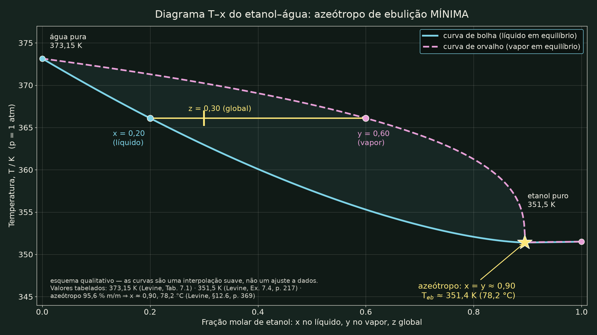